Operating Documentation
Direction 5670006, Rev# 1
Discovery MR750w GEM Service Methods
Module Version 5.0, Version Date 10/20/11
Operating Documentation |
| Required Persons | Preliminary Reqs | Procedure | Finalization |
|---|---|---|---|
| 1 | Included in procedure | 8 hours | Included in procedure |
| Item | Qty | Effectivity | Part# | Manufacturer | |
|---|---|---|---|---|---|
| DVw Stud Repair Kit | 1 | - | 5366120 | - | |
| Non-Magnetic Tool Kit | 1 | - | 5112581 | - | |
| Wood Block (for sanding) | 1 | - | - | - | |
| Non-Magnetic Ruler | 1 | - | - | - | |
| Nonferrous Safety Shoes | 1 | - | - | - | |
| Safety Glasses | 1 | - | - | - | |
| General-duty gloves | 1 | - | - | - | |
| ||||
| Strong Magnetic Field! | ||||
| Ferrous materials can become dangerous projectiles in the Presence of the magnetic field produced by the magnet. | ||||
| Do not bring any ferromagnetic tools or equipment into the Magnet room. |
| ||||
| Electrical shock hazard! | ||||
| Contact with connectors leading to an energized power supply can cause electrical shock. | ||||
| Follow lockout/tagout procedures while performing services to electrical connection components. |
| Condition | Reference | Effectivity |
|---|---|---|
Review all safety procedures | - | - |
Remove magnet enclosures and end bells covering the damaged stud. | - | - |
This procedure describes the replacement of DVw mounting studs that are welded to the magnet. Studs that are threaded into blocks on the magnet are not included in this procedure. This procedure takes place in a magnetic field, and all safety aspects dealing with magnetic field procedures apply. The procedure you need to use depends on the location of the stud you are replacing. Table 1 shows the parts used in the procedures and where they apply.
Table 1: Parts Used in Stud Replacement Procedures
| Part number | Part Name | Use |
|---|---|---|
| 5366178 | Stud Replacement Block, DVw Cylinder | Replacement Stud |
| 5366177 | Stud Replacement Block, DVw Flange | Replacement Stud |
| 5370258 | Spacer Isolation Stud Repair Kit | Spacer used for display panel only |
| 5370258-2 | Spacer Isolation Stud Repair Kit | Spacer used for side electronics only |
| 5368503 | Spacing Bar, For Side Electronics, Stud Replacement | Used for properly spacing studs for Side Electronics |
| U1-SVC-520047 | Sand Paper, 60 Grit, Pack of 10 | Used to remove paint on the magnet |
| 46-252065P158 | Tack Cloth, 18 x 36 inches, Trimaco SKU #10501 or Equal | Used to contain paricles when sanding magnet |
| 5265376 | Dispenser, EPX Plus II, Applicator | Part of Epoxy kit |
| 46-252065P154 | Mixing Nozzle 9742, 3M Scotch-Weld EPX Applicator, 50 ml, PN 62974299356 | Part of Epoxy kit |
| 46-294151P60 | Epoxy Henkel Loctite Metal Bonder 1232609 In Duo-Pak Dispenser With Mixing Nozzle 50 ml Size. Date Code Requirement | Part of Epoxy kit |
| 5268439 | Shim, Power Connection Leadboard Axial Adjustment, XRMB Gradient | Used as spacers when replacing busbar studs (G10 washers) |
| 5214524-6 | Washer, M10 Large od Nordlock, A4 Stainless | Replacement Nordlock washers |
The surfaces around the broken stud on the magnet flange and the outer cylinder must be cleaned before the repair can begin. Illustration 1 shows the area around a magnet stud.
Illustration 1: Magnet Stud
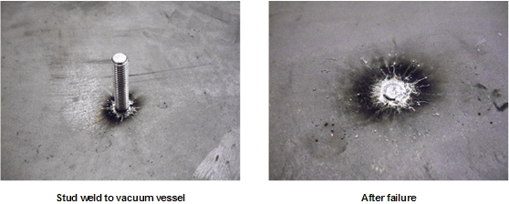
Locate the broken stud and remove components or assemblies that attached the stud so that the broken stud and vacuum vessel surfaces around the stud are fully exposed.
There is usually some debris of weld and/or stud materials attached to the vacuum vessel of magnet after the stud failure (see Illustration 2). To prevent the debris falling into the magnet system, put a piece of tack cloth (cloth coated with light adhesive to capture particles) underneath the surface being cleaned to capture the falling debris. Clean the area around broken stud with the tack cloth. After this step the large pieces of debris can be removed as shown in Illustration 2.
Illustration 2: Stud Weld Area after Initial Debris Removal
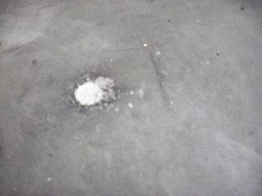
Sand off the paint on surfaces of magnet vacuum vessel using sandpaper included in the repair kit. Clean the area around broken stud with the tack cloth.
| ||||
| Electrical Shock Hazard! | ||||
| Contact with connectors leading to an energized power supply can cause electrical shock. | ||||
| Follow lockout/tagout procedures while performing services to electrical connection components. |
| ||||
| Multiple studs secure the busbar to the magnet. If only one stud fails, it is not necessary to replace it. If more than one stud fails for either the Y or XZ busbar, replace the failed studs. | ||||
Follow all safety lockout/tagout procedures:
Locate the damaged stud. The DVw busbar boards are shown in Illustration 3.
Illustration 3: DVw Busbar Boards
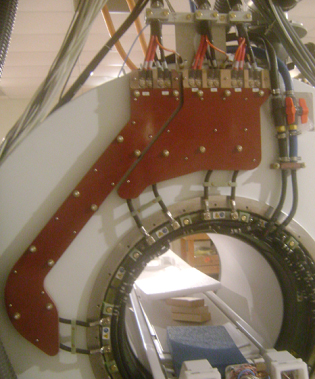
Remove the busbar with the damaged stud. Some studs may require the removal of both busbar boards. See XRMw Cable Busbar Replacement for these steps.
Remove all blue washers from the remaining studs on the magnet.
Place a total of two G10 washers (5268439) onto the remaining studs on the magnet.
Clean a 3 inch diameter area around the broken stud following the procedure in Cleaning Procedure for All Locations.
Place a round replacement stud (5366177) into the proper location on the busbar board. (Since the busbar board is facing downward, the replacement stud assembly goes in stud first through the back of the board). The replacement stud assembly can be seen in Illustration 4.
Illustration 4: Replacement Stud Assembly for Flanges
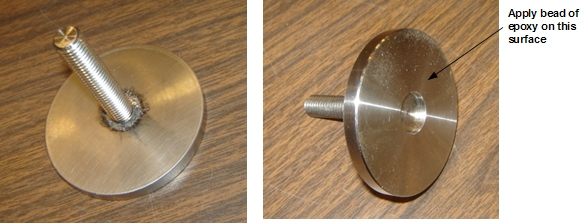
Loosely attach the replacement stud assembly to the board with a G10 washer and M10 nut.
Load an epoxy hardener cartridge into the application gun (Illustration 5). Add the mix nozzle to the cartridge. As the trigger is pulled, the correct ratio of epoxy and hardener will flow out and be properly mixed in the mixing nozzle. Once mixed, the epoxy has a working life of 15 minutes.
Illustration 5: Epoxy Cartridge, Mixing Nozzle, and Application Gun
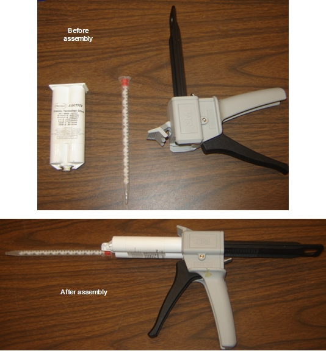
Apply the epoxy to the mating surface of the replacement stud assembly. Apply a ¼ inch circular bead of epoxy on the surface shown in Illustration 6. The center area of the mating surface is provided as a relief in case some of the original stud could not be removed in the magnetic field. No epoxy should be applied to this region. Epoxy may flow into this region when it spreads later in the process.
Illustration 6: Epoxy Bead Application
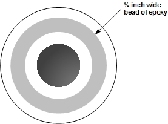
Carefully position the busbar board halfway down on the remaining magnet studs.
Press the busbar board to the magnet surface, keeping the board parallel to the magnet.
Secure the busbar board loosely with washers and nuts.
Remove the nut and washer from the replacement stud assembly.
Move the replacement stud assembly around in its hole, lightly spreading the epoxy.
Center the replacement stud in the hole.
Tighten all of the nuts on the original studs down to slightly more than finger tight. Do not put a nut on the replacement stud.
Wait three hours for the epoxy to cure.
Remove the nuts and remove the busbar board.
| NOTE: | Do not place G10 washers on the replacement stud. The thickness of the replacement stud base is the same as the thickness of two G10 washers. |
Add blue isolation washers back to all of the studs, including the replacement stud.
Secure all of the busbar studs and gradient connections. See XRMw Cable Busbar Replacement.
| ||||
| Electrical Shock Hazard! | ||||
| Contact with connectors leading to an energized power supply can cause electrical shock. | ||||
| Follow lockout/tagout procedures while performing services to electrical connection components. |
| ||||
| Multiple studs secure the side electronics to the magnet. If only one stud fails, it is not necessary to replace it. If more than one stud fails, replace the studs. | ||||
Follow all safety lockout/tagout procedures:
Remove the side electronics components from the magnet:
Physiological Acquisition Controller (PAC) and Scan Room Interface (SRI-4, see Replacement of PAC and SRI-4 (Scan Room Interface)
RRx Receiver (see RRx Receiver Replacement
Transient Detection Module (TDM, see Transient Detection Module (TDM) Replacement)
Remove the side electronics plate from the magnet.
Clean a 3 inch by 3 inch area around the stud using the procedure in Cleaning Procedure for All Locations.
Place the replacement stud into the spacing bar (5368503, from Stud Repair Kit 5366120). The replacement stud assembly is shown in Illustration 7. The replacement stud assembly is made up of a stud and 3 by 2 inch block. The back of the block has the same curvature as the magnet, so the orientation of the block is critical. The long direction of the block goes horizontally on the magnet. There is a ←Z→ marked on the block showing the z-direction of the magnet.
Illustration 7: Replacement Stud Assembly for Side Electronics
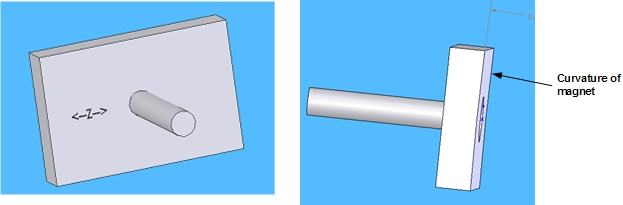
Loosely fasten the replacement stud assembly to the bar with G10 washers, the replacement spacer (5370258-2) and M10 nut. (The replacement stud must be located in the same position as the removed stud). The replacement spacer is the only spacer used on the replacement stud. The original studs reuse the original spacers.
Illustration 8: Replacement Stud and Spacer
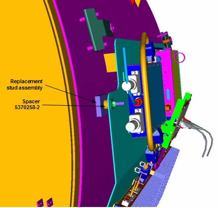
Load the epoxy hardener cartridge into the application gun (see Illustration 5). Add the mix nozzle to the cartridge. As the trigger is pulled, the correct ratio of epoxy and hardener will flow out and be properly mixed in the mixing nozzle. Once dispersed, the epoxy has a working life of 15 minutes.
Apply the epoxy to the mating surface of the replacement stud assembly. Apply two ¼ inch circular beads of epoxy on the surface shown in Illustration 9. The center area of the mating surface is provided as a relief in case some of the original stud could not be removed in the magnetic field. No epoxy should be applied to this region. Epoxy may flow into this region when it spreads.
Illustration 9: Epoxy Bead Application
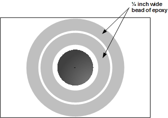
Carefully position the spacing bar halfway down on the remaining magnet studs.
Once positioned on all of the magnet studs, press the spacing bar to the magnet surface, keeping the bar parallel to the magnet.
Secure the spacing bar loosely with washers and nuts.
Remove the nut and washer from the replacement stud assembly.
Move the replacement stud assembly around in its hole, lightly spreading the epoxy.
Center the replacement stud in the hole.
Tighten all of the nuts on the original studs down to slightly more than finger tight. Do not put a nut on the replacement stud.
Wait three hours for the epoxy to cure.
Remove the nuts from the spacing bar, and remove the spacing bar.
Replace and secure the side electronics plate.
Replace and reconnect each of the side electronics components. Refer to:
| ||||
| Electrical Shock Hazard! | ||||
| Contact with connectors leading to an energized power supply can cause electrical shock. | ||||
| Follow lockout/tagout procedures while performing services to electrical connection components. |
Follow all safety lockout/tagout procedures:
Locate the damaged stud.
Remove the enclosure or cover with the damaged stud. See the procedure for the component you need to remove:
Loosen the enclosure bracket from the remaining stud.
Clean a 3 inch by 3 inch area around the location of the broken stud using the procedure in Cleaning Procedure for All Locations.
Place a replacement stud into the enclosure bracket. The replacement stud can be seen in Illustration 10. The stud assembly is made up of a stud and a 3 by 2 inch block. The back of the block has the same curvature as the magnet, so orienting the block is critical. The long direction of the block orients horizontally on the magnet. There is a ←Z→ marked on the block showing the z-direction of the magnet.
Illustration 10: Replacement Stud Assembly for Covers/Enclosures
Loosely attach the replacement stud assembly to the enclosure bracket with a G10 washer and M10 nut.
Illustration 11: Replacement Stud Assembly for Covers/Enclosures
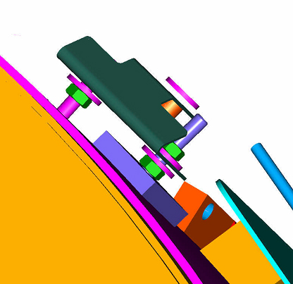
Load the epoxy hardener cartridge into the application gun (see Illustration 5). Add the mix nozzle to the cartridge. As the trigger is pulled, the correct ratio of epoxy and hardener will flow out and be properly mixed in the mixing nozzle. Once dispersed, the epoxy has a working life of 15 minutes.
Apply the epoxy to the mating surface of the replacement stud assembly. Apply two ¼ inch circular beads of epoxy on the surface shown in Illustration 12. The center area of the mating surface is provided as a relief in case some of the original stud could not be removed in the magnetic field. No epoxy should be applied to this region. Epoxy may flow into this region when it spreads.
Illustration 12: Epoxy Application
Carefully position the bracket down on the unbroken magnet stud.
Once positioned on the unbroken magnet stud, press the mounting bracket toward the magnet surface, keeping the bracket parallel to the magnet.
Secure the enclosure bracket loosely with washers and nuts.
Remove the nut and washer from the replacement stud assembly.
Move the replacement stud assembly around in its hole, lightly spreading the epoxy.
Center the replacement stud in the hole. Align the bracket to be parallel to the magnet flange weld (a ruler can be used for this).
Tighten all of the nuts on the original studs down to slightly more than finger tight. Do not put a nut on the replacement stud.
Wait three hours for the epoxy to cure.
Remove the washer and extra nuts from the enclosure bracket.
Replace the enclosure bracket and secure it.
Replace the enclosures.
| ||||
| Multiple studs secure the body hybrid to the magnet. If only one stud fails, it is not necessary to replace it. If more than one stud fails, replace the studs. | ||||
Locate the damaged stud.
Lock out and tag out the PDM-RF power for the system (see LOTO for RF Amplifier and PEN Cabinet (Magnet Room Electronics)
Remove the body hybrid assembly. See Body Hybrid Replacement.
Clean a 2 inch by 2 inch area around the broken stud using the cleaning procedure in Cleaning Procedure for All Locations.
| NOTE: | The procedure for repairing damaged body hybrid studs does not use replacement stud assemblies. Instead, epoxy will be applied directly to the angle bracket screwed onto the body hybrid assembly. Illustration 13 shows how the body hybrid assembly is normally mounted. |
Illustration 13: Body Hybrid Studs
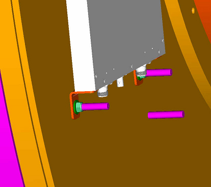
Load the epoxy hardener cartridge into the application gun (see Illustration 5). Add the mix nozzle to the cartridge. As the trigger is pulled, the correct ratio of epoxy and hardener will flow out and be properly mixed in the mixing nozzle. Once dispersed, the epoxy has a working life of 15 minutes.
Apply a ¼ inch circular bead of epoxy around the hole in the bracket that attached to the broken stud. Avoid getting epoxy into the hole. Epoxy may flow into the hole when it spreads.
Carefully position the body hybrid assembly halfway down on the remaining magnet studs.
Press the body hybrid assembly to the magnet surface, keeping the hybrid parallel to the magnet.
Tighten the remaining studs to slightly more than finger tight. Make sure the epoxied bracket is in full contact with the magnet surface. Loosen and adjust the epoxied bracket if necessary.
Wait three hours for the epoxy to cure.
Fully secure the body hybrid and reconnect electronics. See Body Hybrid Replacement.
Locate the damaged stud.
Follow lockout/tagout procedures according to LOTO for PGR PDU/Gradient Subsystem.
Disconnect and remove the Display panel assembly. See Replacing Operator Display and Control Panels.
Clean a 3 inch diameter area around the broken stud using the cleaning procedure in Cleaning Procedure for All Locations.
Place a replacement stud (5366177) into the display frame. Illustration 14 shows a replacement stud.
Illustration 14: Replacement Stud Assembly for Flanges
Loosely attach the replacement stud assembly to the frame with a short isolation pad (5370258), G10 washers, and M10 nut.
Load the epoxy hardener cartridge into the application gun (see Illustration 5). Add the mix nozzle to the cartridge. As the trigger is pulled, the correct ratio of epoxy and hardener will flow out and be properly mixed in the mixing nozzle. Once dispersed, the epoxy has a working life of 15 minutes.
Apply the epoxy to the mating surface of the replacement stud assembly. Apply a ¼ inch circular bead of epoxy on the surface shown in Illustration 15. The center area of the mating surface is provided as a relief in case some of the original stud could not be removed in the magnetic field. No epoxy should be applied to this region. Epoxy may flow into this region when it spreads later in the process.
Illustration 15: Epoxy Bead Application
Carefully position the display panel frame halfway down on the remaining magnet studs.
Press the display panel frame to the magnet surface, keeping the frame parallel to the surface of the magnet.
Secure the frame loosely with washers and nuts.
Remove the nut and washer from the replacement stud assembly.
Move the replacement stud assembly around in its hole, lightly spreading the epoxy.
Center the replacement stud in its hole.
Tighten all of the nuts on the original studs down to slightly more than finger tight. Do not put a nut on the replacement stud.
Wait three hours for the epoxy to cure.
Remove the nuts and reposition the display frame.
Reinstall the display panel hardware. See Replacing Operator Display and Control Panels.
Reinstall all enclosures and connections.
Perform any required system tests.